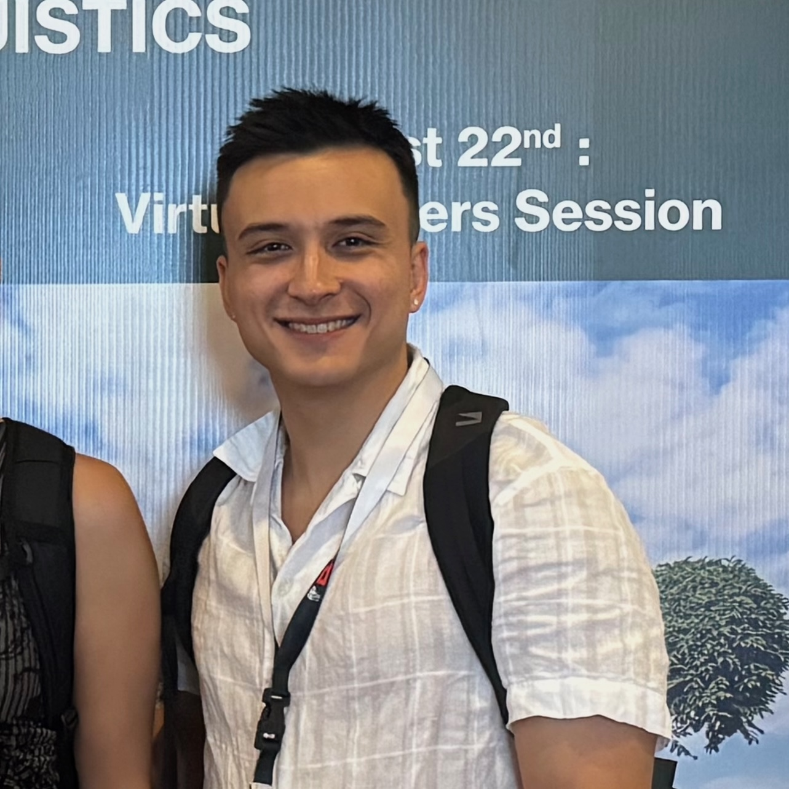

Michael Ginn
/maɪkəl dʒɪn/
I am a fourth-year Ph.D. student at the University of Colorado in the LECS Lab, supervised by Prof. Alexis Palmer and Prof. Mans Hulden. I'm in the Dept. of Computer Science and the Institute for Cognitive Science studying natural language processing and computational linguistics. I obtained my bachelor's in CS at WashU in 2022.
Research Interests
-
Long-tail phenomena in LLMs
How effective and predictable are LLMs on long-tail tasks in rare languages, such as translation and glossing? How can we reliably improve performance using labeled examples? How do LLMs model the long-tail, and can we get insights into mechanistic interventions? -
Metalearning and Continual Learning
Can LLMs learn efficiently from descriptions of complex processes and rules, especially metalinguistic information? Under any metalearning approach, can LLMs learn new processes continually, or do they catastrophically forget their original capabilities? -
Low-Resource ML and Synthetic Data
What are the most reliable approaches to train ML models on very small datasets? For tasks with ample domain knowledge or verification (as in low-resource programming languages), can we effectivelly generate synthetic data that provides training benefits? -
Neurosymbolic AI
How can we model dialogue properties using symbolic representations? Can we ever effectively interpret simple neural networks with symbolic machines/formal languages? Can we train LLMs to be robust symbolic reasoners?
Industry Experience
Currently, I'm collaborating with Amazon on research modeling conversational search dialogs as directed graphs. I've been a five-time intern at Apple on various teams: localization software, input experience ML, and AI developer tools. Most recently, I trained an on-device model using fully synthetic data for next-edit prediction in Swift. I also contributed to the finetuning framework for the Apple MM1 model used by teams throughout Apple.